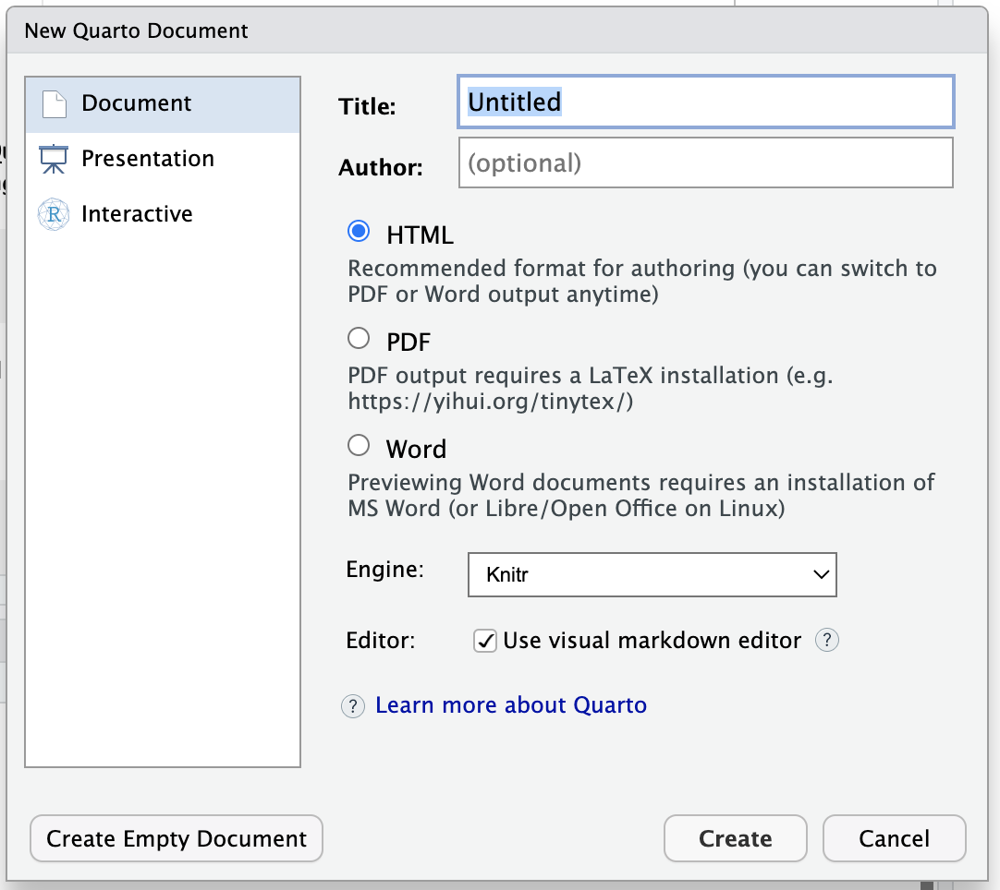
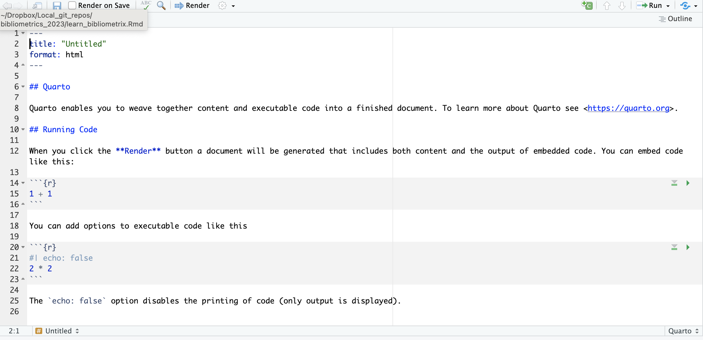
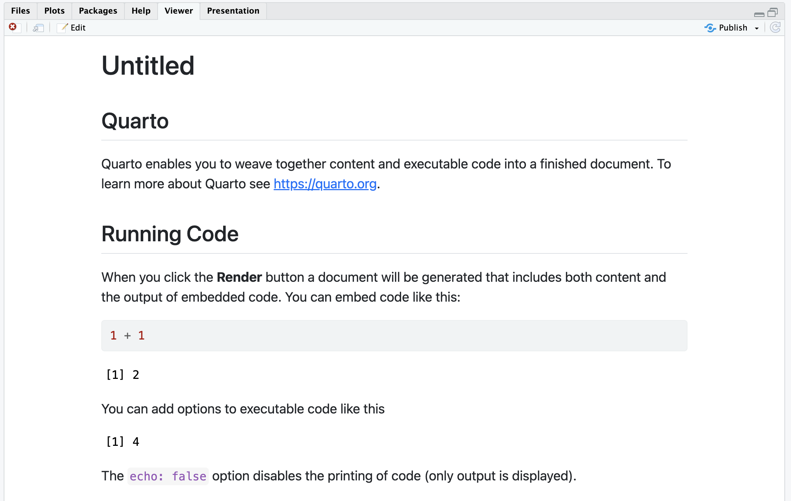

Code
1 + 1
#> [1] 2
print('hello Quatro')
#> [1] "hello Quatro"Before the lesson:
Please make sure you got the latest versions installed of:
* R (https://www.r-project.org/)
* RStudio Desktop (https://posit.co/downloads/)
Lesson objectives:
* Learn and practice basic markdown notations
* Making simple markdown (Quarto) documents in RStudio
Lesson outline:
* About this lesson
* Markdown
* Rmarkdown vs. Quatro
* Why we need markdown?
* Why RStudio?
* Starting RStudio
* Creating a new Quarto markdown (qmd) document
* Rendering qmd document
* Changing qmd document
* Code chunks
* Changing code chunks
* In-line R code
* More resources
This lesson is prepared for these who are already familiar with R coding language, but have not used RStudio or markdown-based document formatting. Thus, we assume basic knowledge of R programming language and we aim to teach you only the basics of markdown and RStudio. By the end of this tutorial you should be able to create a simple html document containing markdown-formatted text, images and R code, all in RStudio.
By the way, this document was created using markdown in RStudio!
Markdown is a simple text formatting syntax for crating HTML documents (at least originally). It works by introducing special sets of formatting characters directly into the texts, which are understood by the text viewers and rendered as formatted text.
Take a short online tutorial to learn the basics of the standard markdown (15-30min): https://commonmark.org/help/tutorial/
Have a look at the markdown reference page: https://commonmark.org/help/
There are small differences between different versions of Markdown (just like English!), but the basic formatting conventions should work for most of the markdown styles. Documents integrating R code are frequently wriiten in R Markdown (Rmarkdown), which was introduced in 2012 via R knitr package (Xie, 2015).
Rmarkdown is a version of Pandoc’s markdown formatting, which is in turn based on the standard Markdown you just learned above. Pandoc’s markdown (and Rmarkdown)has additional syntax available for formatting tables, footnotes, maths and other non-basic text features that are useful when preparing documents in R. For a complete list of Markdown formatting futures available via Pandoc, please visit the official documentation at https://pandoc.org/MANUAL.html#pandocs-markdown (actually, Pandoc is a universal converter for many markup formats, but we are not going to cover it here).
However, in 2023 the Rmarkdown is being replaced by its new incarnation called Quarto (https://quarto.org/). It can run multiple programming languages in one file and incorporates a few other innovations! We want you to learn the most cutting-edge stuff, and from this year we are teaching this class in Quarto rather than Rmarkdown.
Have a look at the Quarto markdown cheat sheet (save the pdf for future reference!):
https://res.cloudinary.com/dyd911kmh/image/upload/v1676540721/Marketing/Blog/Quarto_Cheat_Sheet.pdf
Using information from the cheat sheet, try to find at least 3 reasons for using markdown when you work with R (or other coding language).
In brief, rather than having your R code in one document and the text describing it in another, markdown documents allow combining these two (and other outputs, like tables and plots) in a single file.
Apart of this, there are several main advantages of working with markdown documents:
* As in plain R file, you can save and execute code
* You can split your code into smaller units called “chunks”, which are tidier and easier to work with
* A markdown document gets translated (“renderted”) into an output document, and you have control on how it is formatted and what is included: elements such as R code, R text output, plots, tables, pictures, can be turned on or off
* You can use R code in-line inserts to dynamically update values presented in your text (i.e. no more coping and pasting results of statistical tests!)
* Once you know Rmarkdawn you can use it and its extensions to create a wide range of documents, including presentations, websites, and even books
* Finally, you can generate high quality and reproducible reports in various formats
Have a look at this 3-minute video about what’s possible with Quatro markdown:
https://youtu.be/e9qCS8ODs4o (and here is a similar video for Rmarkdown https://rmarkdown.rstudio.com/lesson-1.html - just for the curious ones!).
RStudio is a well-established and well-supported GUI (Graphical User Interface) that makes working with R code and markdown easier (and it is free and Open-Source as well). It does not take away the fun of typing and editing code in an “code editor” window and/or an R console! But, it also has menus and additional windows that display useful things, such as help info, your plots, lists of files, packages and objects stored in your computing environment, simplified Git interface, etc. These extras make coding and creating documents in RStudio much easier to learn and often more efficient. Especially, RStudio makes creating markdown documents easy. Let’s have a go at it.
Have a quick look at the range of outputs that can be created using Quarto markdown:
https://quarto.org/docs/gallery/
You should have RStudio installed by now. Open it on your computer. You will see four standard panes and some tabs within panes (you can resize or close them once you know what settings work for you best, for now leave as they are).
From the top menu go to “File” -> “New File” -> from drop-down list select “Quarto markdown…”
A new window will pop up asking you for a Title and an Author (enter something suitable):

Press “OK”.
A new document (file) tab will open in the main “Editor” RStudio window:

Note that the document is pre-filled with some example content and basic instructions on using Quatro markdown in RStudio.
Find the “-> Render”” button on top of the code editor window and press it (or use keyboard shortcut Command+Shift+K (MAC) / Ctrl+Shift+S (Windows), there is also an option in the top menu).
A new pop-up will open asking you to save the file first, so enter suitable name and save the file (the keyboard shortcut to save changes in the file later is Command+S (MAC) / Ctrl+S (Windows), there is also a floppy disc button on top of the window).
You can switch the bottom window from the “Console”” tab to the “Background Jobs” tab, to have a look at some processing code that shoiuld appear there (useful when rendering does not work - you can then check error messages in this tab). A “rendered” html document should appear in a Viewer (or a new pop up) window.

This rendered example html document has some text that is formatted, an Internet link, some R code, some R code output. The name of the file is the same as the name of the markdown document you just saved and named, but has .html as its file name extension (Quatro markdown documents have file extension - .qmd). The file be default gets saved in the same folder as your source (markdown) file.
Code chunks contain one or more lines of R code.
To distinguish R code from the plain text. each chunk is surrounded with three ACCENT GRAVE (`) characters (three at the start and three at the end.. Each chunk, after initial ” ``` “, has a code chunk header surrounded with curly braces {}. The header starts with the symbol”r” which indicates that R langiage should be used to exacute (run or interpret) the contents of this code chunk.
In RStudio code editor window, go to the first code chunk (that is the first code chunk in the example file).
Add a following line at the end of the chunk:
print(‘hello Quatro’)
Note that a symbol * appeared next to file name in the tab - it indicates that the file contains unsaved changes.
Save the changes, render the document and see the new output file.
The code inside the R chunk should look like this:
1 + 1
print('hello Quatro')Save and render the document. In the rendered document (html), an additional (text) output should appear showing the output of the new line of code:
1 + 1
#> [1] 2
print('hello Quatro')
#> [1] "hello Quatro"Back in RStudio code editor window, go to the first code chunk and add a formatting parameter label below the {r}:
#| echo: false
Save and render the file.
What happened?
The R code of the first chunk of code should be hidden now. parameter “echo” determines whether the code itself should be shown or not.
Back in RStudio code editor window, go to the second code chunk and change the chunk formatting label from #| echo: false to #| echo: true.
Save and render the file.
What happened?
The R code of the first chunk should be visible again.
Similarly to changing the visibility of the R code, you can turn on and off the output of the code (the stuff that is displayed in the R “console” window after each line of executed code) in the rendered document by using parameter “include” (TRUE or FALSE).
You can also set whether each individual chunk of code actually gets executed, by using parameter “eval” (TRUE or FALSE). This allows you to switch off the chunks that are not needed to be executed for some reason (e.g. when testing an alternative chunk of code).
These were the most commonly used parameters of individual code chunks and we will practice using them in a few of the tasks below. However, you also need to know can also set these parameters globally - i.e. for the whole markdown document - by placing a special “setup” code chunk at the start of the document, using a “opts_chunk” function. You can add the code below as your first chunk (or on top of any R code) to alter the document-level settings:
knitr::opts_chunk$set(echo = TRUE)
This code sets up all the chunks below it to a default of displaying R code. It basically says: unless otherwise specified inside the chunk, for all chunks assume echo: true (i.e. display R code from each chunk by default). You can do the same for any other standard formatting label.
Back in RStudio, in the code editor window, go to the first code chunk and change the chunk fomratting labels from knitr::opts_chunk$set(echo = TRUE) to knitr::opts_chunk$set(eval = FALSE).
Save and render the file.
What happened?
Now, the code should be still visible, but the output should disappear ()unless a given chang has a label ‘#| eval: true’. Default RStudio setting is to evaluate all R code, but you can change this setting for all file or for individual code chunks.
Back in RStudio code editor window, go to the second code chunk and add a new chunk label #| include: false
Save and render the file.
What happened and why?
Now, the output is gone from the rendered file.
The code gets executed, but we the output is not included in the rendered document.
Back in RStudio code editor window, under the second code chunk (i.e. in the text section) write:
The mean of 1 and 2 and 3 is `r mean(c(1,2,3))`. Save and render the file.
What happened?
Now you should have a line of text with in-line value representing some calculations.
If you do this for some objects that are changed, this calculation will update automatically every time you render the Quatro document.
So, you could ad a new chunk and in-text calculation based on the value created in that chunk:
```{r}
x <- 5 # radius of a circle.
```And the text below the chunk:
For a circle with the radius `r x`,
its area is `r pi * x^2`.Save and render the file.
What happened?
Finally, you do not need to re-render the whole document each time. You can run still run individual (or groups of) lines of code by highlighting them and pressing Command+Enter (MAC) / Ctrl+Enter (Windows), as in a basic R editor. You can run individual chunks using several options (and keyboard shortcuts) listed under the Run button at the top-right of the code editor window (check it out now!). This gives you more flexibility and makes it faster to work with you R code. And that was one of the reasons for this tutorial.
But that’s not all, there are many more secrets to productive work with RStudio.
So, if you have some time, read about using projects in RStudio:
https://support.rstudio.com/hc/en-us/articles/200526207-Using-Projects
and this…
https://www.tidyverse.org/articles/2017/12/workflow-vs-script/
and start using it!
We hope this lesson got you started on the path to beautiful and reproducible documents in markdown using RStudio… .
Quarto Markdown:
* A tutoral details on using Quatro markdown in Rstudio: https://quarto.org/docs/get-started/hello/rstudio.html
* Quarto reference (guide) pages: https://quarto.org/docs/guide/
RStudio:
* Keyboard shortcuts to speed you up in RStudio: https://appsilon.com/r-studio-shortcuts-and-tips/
* Book “Getting started with RStudio”: https://www.cs.utexas.edu/~cannata/dataVis/Class%20Notes/Getting%20Started%20with%20RStudio.pdf